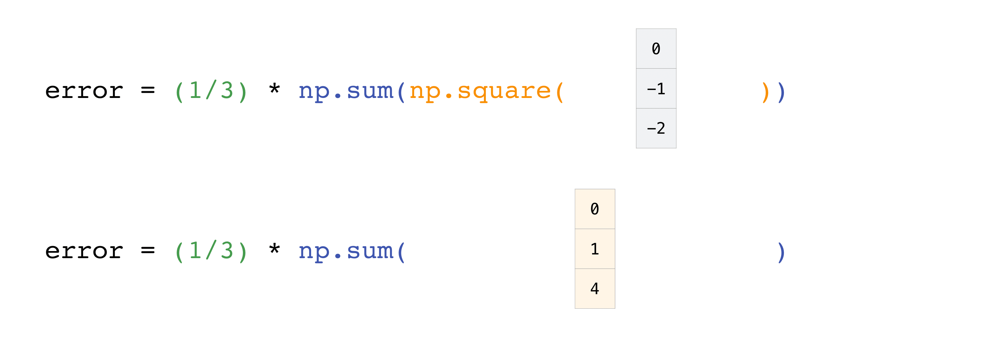

Contenidos | Anterior (1 Random) | Próximo (3 El album de Figuritas)
5.2 NumPy
Esta es una introducción a la biblioteca NumPy (Numerical Python) de Python. Se trata de una colección de módulos de código abierto que tiene aplicaciones en casi todos los campos de las ciencias y de la ingeniería. Es el estándar para trabajar con datos numéricos en Python. Muchas otras bibliotecas y módulos de Python como Pandas, SciPy, Matplotlib, scikit-learn, scikit-image usan numpy.
Esta biblioteca permite trabajar cómodamente con matrices multidimensionales por medio del tipo ndarray, un objeto n-dimensional homogéneo (es decir, con todas sus entradas del mismo tipo), y con métodos para operar eficientemente sobre él. numpy puede usarse para una amplia variedad de operaciones matemáticas sobre matrices. Le agrega a Python estructuras de datos muy potentes sobre las que puedés hacer cálculos y operar matemáticamente con eficiencia y a un alto nivel.
Instalar e importar numpy
Cuando quieras usar numpy en Python, primero tenés que importarlo:
import numpy as np
Acortamos numpy a np para ahorrar tiempo y mantener el código estandarizado. Todes escriben np.
Si no lo tenés instalado (te dará un error al importarlo) podés instalarlo escribiendo alguno de los siguientes comandos, según corresponda:
conda install numpy
pip install numpy
pip3 install numpy
¿Cuál es la diferencia entre listas y arreglos?
numpy ofrece varias formas muy eficientes de crear vectores y manipular datos numéricos. Mientras que una lista de Python puede contener diferentes tipos de datos en su interior, los elementos de un vector numpy serán todos del mismo tipo. De esta forma numpy garantiza un muy alto rendimiento en las operaicones matemáticas.
Además, los arreglos están pensados para tener un tamaño fijo, mientras que las listas están diseñadas para agregar y sacar elementos. Son estructuras de datos similares desde un punto de vista superficial, pero muy diferentes en cuanto a las posibilidades que brindan.
Las operaciones matemáticas sobre vectores de numpy son más rápidas que sobre listas. Además los vectores ocupan menos memoria que las listas análogas. En cambio, modificar el tamaño de una lista es algo muy sencillo mientras que el de un vector es costoso. Y combinar diferentes tipos de datos es sencillo en las listas pero imposible en los vectores de numpy.
Arreglos n-dimensionales
Los vectores (unidimensionales) y matrices (bidimensiones) se generalizan a arreglos n-dimensionales. Esta estructura de datos es la central de la biblioteca numpy. Un arreglo (ndarray) tiene una grilla de valores (datos crudos) junto con información sobre cómo ubicarlos y cómo interpretarlos. Los elementos de esta grilla pueden ser indexados de diversas maneras y, como ya dijimos, son todos del mismo tipo. Este tipo es frecuentemente abreviado como dtype (por data type).
Un arreglo puede ser indexado por tuplas de enteros no negativos, por variables booleanas, por otro arreglo o por enteros. El rango (rank) de un arreglo es su número de dimensiones. Su forma (shape) es una tupla de enteros que dice su tamaño en cada dimensión.
Una forma de inicializar un arreglo de numpy es mediante una lista de números. Esto nos da un vector (arreglo de dimensión uno). Usando listas anidadas, podemos definir arreglos de más altas dimensiones.
Por ejemplo:
>>> a = np.array([1, 2, 3, 4, 5, 6])
o:
>>> a = np.array([[1, 2, 3, 4], [5, 6, 7, 8], [9, 10, 11, 12]])
Podemos acceder a los elementos de un arreglo usando corchetes. Acordate que los índices comienzan a contar en 0. Esto significa que si querés acceder al primer elemento, vas a acceder al elemento “0”.
>>> print(a[0]) # si tiene múltiples dimensiones, esto me da una "rebanada" de una dimensión menos
[1 2 3 4]
>>> print(a[2]) # otra rebanada
[ 9, 10, 11, 12]
>>> print(a[2][3]) # accedo al cuarto elemento del tercer vector de a
12
>>> print(a[2,3]) # o, equivalentemente, accedo al elemento en la tercera fila y cuarta columna de a
12
Más información sobre arreglos
Ocasionalmente vas a ver que alguien se refiere a un arreglo como un “ndarray” que es una forma breve de decir arreglo n-dimensional. Un arreglo n-dimensional es simplemente un arreglo con n dimensiones. Recordemos que cuando son unidimensionales los llamamos vectores y si son bidimensionales los llamamos matrices.
¿Qué atributos tiene un arreglo?
Un arreglo es usualmente un contenedor de tamaño fijo de elementos del mismo tipo. Su forma (shape) es una tupla de enteros no negativos que especifica el tamaño del arreglo en cada dimensión. Un arreglo tiene tantas dimensiones como coordenadas en la tupla.
En numpy, las dimensiones se llaman axes (ejes). Esto significa que si tenés un arreglo bidimensional que se ve así:
[[0., 0., 0.],
[1., 1., 1.]]
el arreglo tendrá dos ejes. El primer eje tiene tamaño dos, el segundo tamaño tres (sí, se cuentan primero filas, luego columnas).
De la misma forma que los otros objetos contenedores de Python, los elementos de un arreglo pueden ser accedidos y modificados usando índices y rebanadas.
Crear un arreglo básico
Para crear un arreglo de numpy podés usar la función np.array().
Lo único que necesitás es pasarle una lista. Si querés, podés especificar el tipo de datos que querés que tenga.
>>> import numpy as np
>>> a = np.array([1, 2, 3])
Vamos a representar la creación con este gráfico:

Ojo, estas visualizaciones son simplificaciones para representar lo que esta pasando y darte un entendimiento básico de los conceptos y mecanismos de numpy. Los arreglos y sus operaciones tienen aspectos más complejos que los que quedan capturados en estos dibujitos.
Además de crear un arreglo a partir de una secuencia de elementos, podés crear un arreglo lleno de 0’s:
>>> np.zeros(2)
array([0., 0.])
O uno lleno de 1’s:
>>> np.ones(2)
array([1., 1.])
¡O incluso uno no inicializado! La función empty crea un arreglo cuyo contenido inicial depende del estado de la memoria. Lo bueno de usar empty en lugar de zeros (o ones) es la velocidad - al no inicilizar los valores no perdemos tiempo. ¡Pero asegurate de ponerle valores con sentido luego!
>>> # Crea un arreglo con dos elementos
>>> np.empty(2)
array([ 3.14, 42. ]) # puede variar
También podés crear vectores a partir de un rango de valores:
>>> np.arange(4)
array([0, 1, 2, 3])
También un vector que contiene elementos equiespaciados, especificando el primer número, el límite, y el paso.
>>> np.arange(2, 9, 2) # o np.arange(2, 10, 2)
array([2, 4, 6, 8])
El límite derecho nunca está en la lista.
También podés usar np.linspace() para crear un vector de valores equiespaciados especificando el primer número, el último número, y la cantidad de elementos:
>>> np.linspace(0, 10, num=5)
array([ 0. , 2.5, 5. , 7.5, 10. ])
Ejercicio 5.7: arange() y linspace()
Generá un vector que tenga los números impares entre el 1 y el 19 inclusive usando arange(). Repetí el ejercicio usando linspace(). ¿Qué diferencia hay en el resultado?
Especificar el tipo de datos
Si no lo especificás, el tipo de datos (por omisión) de los arreglos es el punto flotante (np.float64). Sin embargo, podés explicitar otro tipo de datos usando la palabra clave dtype.
>>> x = np.ones(2, dtype=np.int64)
>>> x
array([1, 1])
En estos dos casos el 64 de los tipos de datos se refiere a la cantidad de bits usados para representar el número en el sistema binario: 64 bits.
Agregar, borrar y ordenar elementos
Ordenar un vector es sencillo usando np.sort().
Por ejemplo, si comenzás con este vector:
>>> arr = np.array([2, 1, 5, 3, 7, 4, 6, 8])
Podés ordenar sus elementos con:
>>> np.sort(arr)
array([1, 2, 3, 4, 5, 6, 7, 8])
Fijate que el vector arr quedó desordenado. sort simplemente devolvió una copia ordenada de los datos pero no modificó el original.
Otra operación usual es la concatenación. Si empezás con estos dos vectores:
>>> a = np.array([1, 2, 3, 4])
>>> b = np.array([5, 6, 7, 8])
los podés concatenar usado np.concatenate().
>>> np.concatenate((a, b))
array([1, 2, 3, 4, 5, 6, 7, 8])
Un ejemplo un poco más complejo es el siguiente:
>>> x = np.array([[1, 2], [3, 4]])
>>> y = np.array([[5, 6]])
Los podés concatenar usando:
>>> np.concatenate((x, y), axis=0)
array([[1, 2],
[3, 4],
[5, 6]])
Conocer el tamaño, dimensiones y forma de un arreglo
ndarray.ndim te dice la cantidad de ejes (o dimensiones) del arreglo.
ndarray.shape te va a dar una tupla de enteros que indican la cantidad de elementos en cada eje. Si tenés una matriz con 2 filas y 3 columnas de va a dar (2, 3).
ndarray.size te dice la cantidad de elementos (cantidad de números) de tu arreglo. Es el producto de la tupla shape. En el ejemplo del renglón anterior, el size es 6.
Por ejemplo, si creás este arreglo de tres dimensiones:
>>> array_ejemplo = np.array([[[0, 1, 2, 3],
... [4, 5, 6, 7]],
...
... [[0, 1, 2, 3],
... [4, 5, 6, 7]],
...
... [[0 ,1 ,2, 3],
... [4, 5, 6, 7]]])
Vas a tener
>>> array_ejemplo.ndim # cantidad de dimensiones
3
>>> array_ejemplo.shape # cantidad de elementos en cada eje
(3, 2, 4)
>>> array_ejemplo.size # total de elementos 3*2*4
24
Cambiar la forma de un arreglo
Usando arr.reshape() le podés dar una nueva forma a tu arreglo sin cambiar los datos. Solo tené en cuenta que antes y después del reshape el arreglo tiene que tener la misma cantidad de elementos. Por ejemplo, si comenzás con un arreglo con 12 elementos, tendrás que asegurarte que el nuevo arreglo siga teniendo 12 elementos.
Por ejemplo:
>>> a = np.arange(6)
>>> print(a)
[0 1 2 3 4 5]
Podés usar reshape() para cambiarle la forma y que en lugar de ser un vector de 6 elementos, sea una matriz de 3 filas y dos columnas:
>>> b = a.reshape(3, 2)
>>> print(b)
[[0 1]
[2 3]
[4 5]]
Agregar un nuevo eje a un arreglo
A veces pasa que tenemos un vector con n elementos y necesitamos pensarlo como una matriz de una fila y n columnas o de n filas y una columna. Podés usar np.newaxis para agregarle dimensiones a un vector existente.
Usando np.newaxis una vez podés incrementar la dimensión de tu arreglo en uno. Por ejemplo podés pasar de un vector a una matriz o de una matriz a un arreglo tridimensional, etc.
Por ejemplo, si comenzás con este vector:
>>> a = np.array([1, 2, 3, 4, 5, 6])
>>> a.shape
(6,)
Podés usar np.newaxis para agregarle una dimensión y convertirlo en un vector fila:
>>> vec_fila = a[np.newaxis, :]
>>> vec_fila.shape
(1, 6)
O, para convertirlo en un vector columna, podés unsertar un eje en la segunda dimensión:
>>> vec_col = a[:, np.newaxis]
>>> vec_col.shape
(6, 1)
Índices y rebanadas
Podés indexar y rebanar arreglos de numpy como hicimos con las listas.
Para obtener elementos de un arreglo, lo más sencillo es usar los índices para seleccionar los que queremos conservar.
>>> data = np.array([1, 2, 3])
>>> data[1]
2
>>> data[0:2]
array([1, 2])
>>> data[1:]
array([2, 3])
>>> data[-2:]
array([2, 3])
Lo podés visualizar así:

Otra operación muy útil es seleccionar los elementos que cumplen cierta condición. Por ejemplo, si comenzás con un arreglo así:
>>> a = np.array([[1, 2, 3, 4], [5, 6, 7, 8], [9, 10, 11, 12]])
Podés imprimir todos los valores menores que cinco.
>>> print(a[a < 5])
[1 2 3 4]
También podés seleccionar, por ejemplo, aquellos elementos mayores o iguales que 5 y usar el resultado para indexar el arreglo.
>>> five_up = (a >= 5)
>>> print(a[five_up])
[ 5 6 7 8 9 10 11 12]
Es interesante que five_up da un arreglo de valores booleanos. True si satisface la condición y False si no la satisface.
Podés seleccionar los elementos pares:
>>> pares = a[a%2==0]
>>> print(pares)
[ 2 4 6 8 10 12]
Usando los operadores lógicos & y | podés combinar dos o más condiciones.
Ya sea para seleccionar elementos directamente:
>>> c = a[(a > 2) & (a < 11)]
>>> print(c)
[ 3 4 5 6 7 8 9 10]
o para definir una nueva variable booleana:
>>> five_up = (a > 5) | (a == 5)
>>> print(five_up)
[[False False False False]
[ True True True True]
[ True True True True]]
Finalmente, podés usar np.nonzero() para obtener las coordenadas de ciertos elementos de un arreglo.
Si empezamos con este arreglo:
>>> a = np.array([[1, 2, 3, 4], [5, 6, 7, 8], [9, 10, 11, 12]])
Podés usar np.nonzero() para imprimir los índices de los elementos que son, digamos, menores que 5:
>>> b = np.nonzero(a < 5)
>>> print(b)
(array([0, 0, 0, 0]), array([0, 1, 2, 3]))
En este ejemplo, la respuesta es una tupla de arreglos: uno por cada dimensión. El primer arreglo representa las filas de los elementos que satisfacen la condición y el segundo sus columnas.
Si querés generar la lista de coordenadas donde se encuentran estos elementos, podés zipear los arreglos, convertir el resultado en una lista e imprimirla:
>>> lista_de_coordenadas = list(zip(b[0], b[1]))
Surge naturalmente la pregunta: ¿porqué tengo que convertir el objeto zip a una lista? Veremos en la segunda mitad de la materia más detalles sobre generadores en Python para entender exactamente lo que está pasando aquí. Simplemente digamos que al zipear b[0] y b[1] no se genera la lista realmente, sino potencialmente. Sólo al solicitar sus elementos (iterando sobre ello o con list) se generan realmente las coordenadas.
>>> for coord in lista_de_coordenadas:
... print(coord)
(0, 0)
(0, 1)
(0, 2)
(0, 3)
Podés usar np.nonzero() para imprimir o seleccionar los elementos del arreglo que son menores que 5:
>>> print(a[b])
[1 2 3 4]
Si la condición que ponés no la satisface ningún elemento del arreglo entonces el arreglo de índices que obtenés con np.nonzero() será vacío. Por ejemplo:
>>> no_hay = np.nonzero(a == 42)
>>> print(no_hay)
(array([], dtype=int64), array([], dtype=int64))
Crear arreglos usando datos existentes
Es sencillo crear un nuevo arreglo usando una sección de otro arreglo.
Suponete que tenés este:
>>> a = np.array([1, 2, 3, 4, 5, 6, 7, 8, 9, 10])
Podés crear otro arreglo a partir de una sección de a, simplemente especificando qué parte querés.
>>> arr1 = a[3:8]
>>> arr1
array([4, 5, 6, 7, 8])
Es importante saber que este método genera una vista del arreglo original y no una verdadera copia. Si modificás un elemento de la vista, ¡también se modificará en el original!
>>> arr1[0] = 44
>>> print(a)
[ 1 2 3 44 5 6 7 8 9 10]
El concepto de vista es importante para entender lo que está pasando. Las operaciones más frecuentes devuelven vistas y no copias. Esto ahorra memoria y es más veloz, pero si no lo sabés puede traerte problemas.
Veamos este ejemplo:
>>> a = np.array([[1, 2, 3, 4], [5, 6, 7, 8], [9, 10, 11, 12]])
Ahora creamos b1 a partir de una rebanada de a y modificamos su primer elemento. ¡Esto va a modificar el elemento correspondiente de a también!
>>> b1 = a[0, :]
>>> b1
array([1, 2, 3, 4])
>>> b1[0] = 99
>>> b1
array([99, 2, 3, 4])
>>> a
array([[99, 2, 3, 4],
[ 5, 6, 7, 8],
[ 9, 10, 11, 12]])
Podés usar el método copy para copiar los datos. Por ejemplo:
>>> b2 = a[1, :].copy()
>>> b2
array([5, 6, 7, 8])
>>> b2[0] = 95
>>> b2
array([95, 6, 7, 8])
>>> a # ¡no se modifica el 5!
array([[99, 2, 3, 4],
[ 5, 6, 7, 8],
[ 9, 10, 11, 12]])
Operaciones básicas sobre arreglos
Una vez que sabés crear arreglos podés empezar a trabajar con ellos. Imaginemos que tenés dos arreglos, uno llamados “data” y otro llamado “ones”.

Podés sumarlos con el signo más.
>>> data = np.array([1, 2])
>>> ones = np.ones(2, dtype=int)
>>> data + ones
array([2, 3])

Obviamente, podés hacer otras operaciones.
>>> data - ones
array([0, 1])
>>> data * data
array([1, 4])
>>> data / data
array([1., 1.])

Estas operaciones básicas son simples con numpy. Si querés calcular la suma de los elementos del arreglo, podés usar sum(). Esto funciona para vectores, matrices y arreglos de dimensión más alta también.
>>> a = np.array([1, 2, 3, 4])
>>> a.sum()
10
Para sumar los valores por fila o por columna en una matriz, simplemente tenés que especificar el eje sobre el que se hará la suma.
Si tenés la matriz:
>>> b = np.array([[1, 1], [2, 2]])
podés sumar los datos de cada columna con:
>>> b.sum(axis=0)
array([3, 3])
y los datos de cada fila usando:
>>> b.sum(axis=1)
array([2, 4])
Broadcasting
Hay veces en que necesitás realizar una operación entre un arreglo y un número (en matemática le decimos, un escalar). Por ejemplo tenés un vector con distancias en millas (lo llamamos "data") y lo necesitás convertir a distancias en kilómetros. Podés hacer esta operación así:
>>> data = np.array([1.0, 2.0])
>>> data * 1.6
array([1.6, 3.2])

numpy entiende que la multiplicación debe ocurrir en cada celda del vector. Este concepto se llama broadcasting. El mecanismo de broadcasting le permite a numpy realizar operaciones en arreglos de diferente tamaño, pero los tamaños deben ser compatibles. Por ejemplo si ambos arreglos tienen el mismo tamaño o si uno tiene tamaño 1 (escalar). Si los tamaños no son compatibles, te va a dar un ValueError.
Operaciones un poco más complejas
numpy también te permite realizar operaciones que resumen los datos. Además de min, max, y sum, podés usar mean para obtener el promedio, prod para calcular el producto, std para obtener el desvío estándar de los datos, y más.
>>> data.max()
2.0
>>> data.min()
1.0
>>> data.sum()
3.0

Supongamos que tenemos un arreglo, llamado “a”
>>> a = np.array([[0.45053314, 0.17296777, 0.34376245, 0.5510652],
... [0.54627315, 0.05093587, 0.40067661, 0.55645993],
... [0.12697628, 0.82485143, 0.26590556, 0.56917101]])
Es usual procesar los datos por fila o por columna. Si no lo aclarás, numpy procesa los datos de todo el arreglo. Para encontrar la suma o el mínimo del arreglo, usá:
>>> a.sum()
4.8595784
O:
>>> a.min()
0.05093587
Podés especificar qué eje querés considerar. Por ejemplo, para calcular el mínimo de cada columna especificás axis=0.
>>> a.min(axis=0)
array([0.12697628, 0.05093587, 0.26590556, 0.5510652 ])
Son cuatro valores, porque la matriz tiene cuatro columnas.
Crear matrices
Podés usar listas de listas para crear arreglos bidimensionales (matrices).
>>> data = np.array([[1, 2], [3, 4]])
>>> data
array([[1, 2],
[3, 4]])

Las técnicas de indexación y rebanadas son muy útiles para manipular matrices:
>>> data = np.array([[1, 2], [3, 4], [5, 6]])
>>> data[0, 1]
2
>>> data[1:3]
array([[3, 4], [5, 6]])
>>> data[0:2, 0]
array([1, 3])

Podés procesar los datos de matrices como lo hicimos con vectores:
>>> data.max()
6
>>> data.min()
1
>>> data.sum()
21

Podés procesar todos, o hacerlo por fila o por columna usando el parámetro axis:
>>> data = np.array([[1, 2], [5, 3], [4, 6]])
>>> data.max(axis=0)
array([5, 6])
>>> data.max(axis=1)
array([2, 5, 6])

Una vez que tenés tus matrices creadas, podés hacer artimética con pares de matrices del mismo tamaño.
>>> data = np.array([[1, 2], [3, 4]])
>>> ones = np.array([[1, 1], [1, 1]])
>>> data + ones
array([[2, 3],
[4, 5]])

También se pueden sumar matrices de tamaños diferentes, pero sólo si una de ellas tiene una sola fila o una sola columna. En este caso, numpy va a usar las reglas de broadcast para la operación.
>>> data = np.array([[1, 2], [3, 4], [5, 6]])
>>> ones_row = np.array([[1, 1]])
>>> data + ones_row
array([[2, 3],
[4, 5],
[6, 7]])

Tené en cuenta que cuando numpy imprime arreglos n-dimensionales, el último eje se itera más rápido y el primero más lento. Por ejemplo:
>>> np.ones((4, 3, 2))
array([[[1., 1.],
[1., 1.],
[1., 1.]],
[[1., 1.],
[1., 1.],
[1., 1.]],
[[1., 1.],
[1., 1.],
[1., 1.]],
[[1., 1.],
[1., 1.],
[1., 1.]]])
Es frecuente que querramos inicializar los valores de una matriz. numpy ofrece las funciones ones() y zeros(), así como también la clase random.Generator que genera número aleatorios. Sólo hay que pasarle la cantidad de elementos que queremos generar:
>>> np.ones(3)
array([1., 1., 1.])
>>> np.zeros(3)
array([0., 0., 0.])
>>> np.random.random(3)
array([0.63696169, 0.26978671, 0.04097352]) # puede variar

También podés usar ones(), zeros(), y random() para crear matrices, si le pasás una tupla describiendo la forma de la matriz:
>>> np.ones((3, 2))
array([[1., 1.],
[1., 1.],
[1., 1.]])
>>> np.zeros((3, 2))
array([[0., 0.],
[0., 0.],
[0., 0.]])
>>> np.random.random((3, 2))
array([[0.01652764, 0.81327024],
[0.91275558, 0.60663578],
[0.72949656, 0.54362499]]) # puede variar

Esta idea se generaliza a dimensiones más altas.
Fórmulas matemáticas
La facilidad para implementar fórmulas matemáticas sobre un arreglo es una de las características de numpy que lo hacen tan ampliamente usado en la comunidad científica de Python.
Por ejemplo, ésta es la fórmula del error cuadrático medio:

Implementar esta fórmula es simple y directo con numpy:

Lo genial de esta abstracción es que predictions y labels puede tener uno o mil valores. Sólo tienen que tener el mismo tamaño para que todo funcione.
Lo podés visulalizar así:

En este ejemplo, tanto las predicciones como las etiquetas tienen tres valores. Es decir n vale tres. Luego de hacer la resta los valores se elevan al cuadrado. Luego numpy suma los valores, divide por tres, y el resultado es el error de esa predicción y puede usarse como un puntaje que mide la calidad del modelo que predice.
 
Guardar y cargar objetos de numpy
Si seguís usando Python después de este curso, es muy probable que en cierto punto quieras guardar tus matrices (o arreglos n-dimensionales) para cargarlas en otro momento sin tener que volver a correr el código que las genera. Hay un par de formas de guardar objetos de numpy. Los objetos ndarray pueden guardarse y leerse de disco con las funciones loadtxt y savetxt usando archivos de texto (tienen la ventaja de que los podés ver con un editor de textos como el sublime o geany), y con las funciones load y save que guardan archivos binarios con extensión .npy.
Los archivos .npy guardan los datos, la forma, el tipo del arreglo y otra información necesaria que permiten reconstruirlos correctamente, incluso en otra máquina con otra arquitectura.
Es sencillo guardar un arreglo con np.save(). Solo asegurate de especificar el arreglo que querés guardar y el nombre del archivo. Por ejemplo, si creás este vector:
>>> a = np.array([1, 2, 3, 4, 5, 6])
Lo podés guardar en “filename.npy” con:
>>> np.save('filename', a)
Y lo podés cargar con np.load() para reconstruir tu vector.
>>> b = np.load('filename.npy')
Para verificarlo, usá:
>>> print(b)
[1 2 3 4 5 6]
En formato de texto plano, lo podés guardar como .csv o .txt con np.savetxt.
Por ejemplo, si tenés este vector:
>>> csv_arr = np.array([1, 2, 3, 4, 5, 6, 7, 8])
lo podés guardar en un archivo .csv con nombre “new_file.csv” así:
>>> np.savetxt('new_file.csv', csv_arr)
Y lo podés cargar fácilmente usando loadtxt():
>>> np.loadtxt('new_file.csv')
array([1., 2., 3., 4., 5., 6., 7., 8.])
Las funciones savetxt() y loadtxt() aceptan parámetros adicionales para especificar el encabezado y los delimitadores. Si bien los archivos de texto son sencillos para compartir, los archivos .npy (y .npz) son más pequeños y se leen más rápidamente.
Ejercicio 5.8: Guardar temperaturas
Ampliá el código de termometro.py que escribiste en el Ejercicio 5.6 para que guarde el vector con las temperaturas simuladas en el directorio Data de tu carpeta de ejercicios, en un archivo llamado Temperaturas.npy. Hacé que corra 999 veces en lugar de solo 99.
Ejercicio 5.9: Empezando a plotear
En un rato vamos a empezar a hacer gráficos con Python. Aquí solo un botón de muestra.
Escribí un archivo plotear_temperaturas.py que lea el archivo de datos Temperaturas.npy con 999 mediciones simuladas que creaste recién y, usando el siguiente ejemplo, hacé un histograma de las temperaturas simuladas:
import matplotlib.pyplot as plt
plt.hist(temperaturas,bins=25)
plt.show() #el show no hace falta en algunos entornos. A veces lo omitiremos.
Ajustá la cantidad de bins para que el gráfico se vea lo mejor posible.
Contenidos | Anterior (1 Random) | Próximo (3 El album de Figuritas)